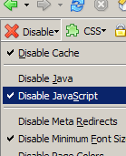

What is Unobtrusive Ajax?
-
It's the separation of:
- Content (HTML),
- Presentation (CSS),
- and Behaviour (JavaScript)
- It involves separating these:
- Physically (.html, .css & .js files)
- and Conceptually (independant layers)
What is Unobtrusive Ajax?

-
This is a lot like MVC separation:
- Model (HTML),
- View (CSS),
- and Controller (JavaScript)
- MVC separation is very popular
- Similar code is grouped in layers
- Each layer is (mostly) independant
Physical Separation
- CSS in .css files, JavaScript in .js files
- No
onload,onclickorstyle - No deprecated HTML like
<font>oralign
Conceptual Separation
- Content and forms available in plain HTML
- Forms and links work without JavaScript
- Presentation is in CSS, not HTML or JavaScript
- Anyone can access the content with any client, without CSS, JavaScript, or even a mouse
What's the difference?
How are physical separation and conceptual separation different?
- Site can work great without CSS or JS but still
use
onclickandstyle - Site can be totally broken without JavaScript even with all JS in a separate file
- Physical Separation benefits developers the most
- Conceptual Separation benefits visitors the most
Unobtrusive HTML
- Use the full range of HTML tags
<h1>, etc. for headers,<label>for form labels
- Use tables only for tabular data
- Avoid
<div>and<span>
Unobtrusive CSS
- All CSS is unobtrusive
- Use reusable classes when possible
- Keep CSS in an external file or a
<style> <h1>is better than<div class="header">
Unobtrusive Flash Objects
- Replacing HTML with Flash using JavaScript
- A script from Bobby van der Sluis (bobbyvandersluis.com)
- Content can be duplicated in HTML
- Browsers that support Flash get a sexy Flash version
- Keeps messy Flash code out of the HTML
Unobtrusive JavaScript
- Start with plain HTML
- Enhance HTML with JavaScript
- Don't assume: test everything
- If JavaScript is broken, the page still works
- Don't use
onclickorjavascript:void(0) - Keep JavaScript in an external file or a
<script>
Why use Unobtrusive Ajax?
- If you don't, nobody will want to hang out with you
- You will have to eat alone at lunch
- You won't get invited to all the good parties
- Kids will throw eggs at your house
- Just kidding!
Why use Unobtrusive Ajax?
- Fact is, you don't have to
- Most people don't
- Some notable examples:
- Google Maps (maps.google.com)
- TWERQ (twerq.com)
- Marlboro (marlboro.com)
Why use Unobtrusive Ajax?
It's not hard
- You may need only a few changes
- Sometimes it is easier to write Unobtrusive code
- You can often gradually improve existing sites
Why use Unobtrusive Ajax?
Code is cleaner and easier to maintain
- Easier to read and understand means easier to change
- Redo entire look of site with just CSS
- JavaScript can be changed easily
- HTML can even change safely
Why use Unobtrusive Ajax?
It improves Accessibility
- Accessibility means letting everyone access the content
- You can't make assumptions about everyone
- You can assume that all browsers understand HTML
- ~10% have JavaScript disabled (www.w3schools.com/browsers/browsers_stats.asp)
- Some use screenreaders, some can't use a mouse
Why use Unobtrusive Ajax?
It improves Search Engine Friendliness
- Web spiders don't have JavaScript or CSS
- Web spiders only follow
<a>links - People can't search the content in your JavaScript/Flash
- More content and structured HTML makes a page more relevant
Why use Unobtrusive Ajax?
Sometimes you need JavaScript
- Of course, JavaScript games won't work without it
- Many web statistic scripts depend on JavaScript
- Google Ads require JavaScript
- Just do the best you can
How do you use it?
Just do it
- Don't ask your client/boss "Can we assume everyone has JavaScript?"
- You don't ask about other design decisions
- It's up to you to keep your code clean and manageable
- They don't know how easy Unobtrusive Ajax is
How do you use it?
Start off without JavaScript
- Use plain HTML with links and forms
- Use CSS to add hover & scroll effects
- Use HTTP features (eg. "Location" header for redirect)
How do you use it?
Respect the link
- All the links on your site should work without JavaScript
- This means no
javascript:protocol - Don't even use
<a href="#"> - If you need a JavaScript-only link, add it with JavaScript
How do you use it?
Add in hooks for CSS and JavaScript
- Add IDs on elements that are unique on a page
- Add classes on elements that are repeated
- Use lists and other semantic structures
How do you use it?
Use proven techniques
- Start with plain HTML and CSS
- Override links and forms to update page dynamically
- Offer content through both HTML and JSON/XML
- Have extra CSS for those with/without JavaScript
- Have separate sites for JavaScript / non-JavaScript
How do you use it?
Browser tools
- You need to be able to disable JavaScript and CSS
- Get Web Developer toolbars for Firefox and IE
- Get Firebug for Firefox! (joehewitt.com)
How do you use it?
JavaScript tools
- addEvent and removeEvent (QuirksBlog)
- httpRequest
- addDOMLoadEvent (thefutureoftheweb.com)
- addClassName, removeClassName
- DOM Scripting... and innerHTML
Examples
Google Suggest
- Simple: it becomes a regular search box without JavaScript
Examples
Click to vote
- Start with regular link or form submit
- Override with
onclick - Do background Ajax call and update page dynamically
Examples
Google Maps
- Remember MapQuest?
- Could have regular links/buttons for move, zoom
- Override controls with
onclick - Use Ajax to get new data
- Update map dynamically
Examples
Drag-n-drop
- No way to implement without JavaScript
- Offer alternative, eg. link or button to sort/add to cart
- If functionality is trivial, just require JavaScript
- May want to show move cursor for just JavaScript
Examples
Calendar / Date Picker
- Only show "view calendar" link with JavaScript
- People without JavaScript can just type a date
Examples
Form validation
- Have server-side validation as well
- Client-side is nice and faster, but not trustable
Examples
Pop-up windows
- Start with regular link and
target="_blank" - Override link with
onclickandwindow.open
Examples
Chat
- Start with old-school frames, meta refresh and form + target
- Replace frame with regular
<div> - Open Ajax communication for updates
- Override form submit with Ajax call
Examples
Tree
- Start with it expanded completely
- Use JavaScript to collapse it
- Add clickable nodes that expand branches
Examples
Sortable table columns
- Start with regular table
- Add
onclickto table headers - Class names can specify how to sort (number, alpha)
Conclusion

- Unobtrusive Ajax is easy
- Ajax doesn't have to break the web
Thanks!
Jesse Skinner
www.thefutureoftheweb.com